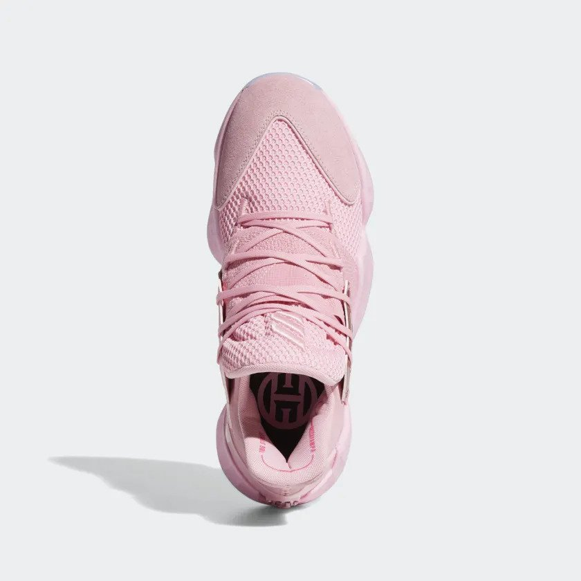
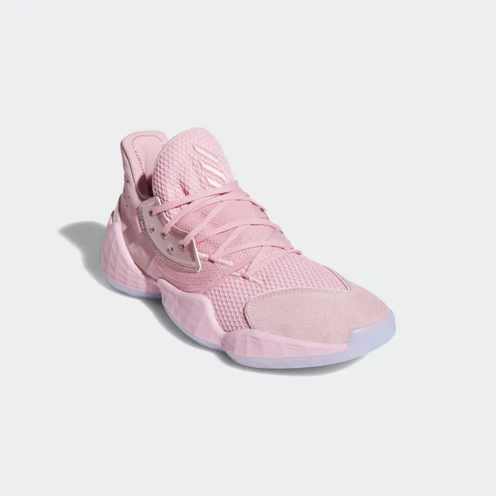
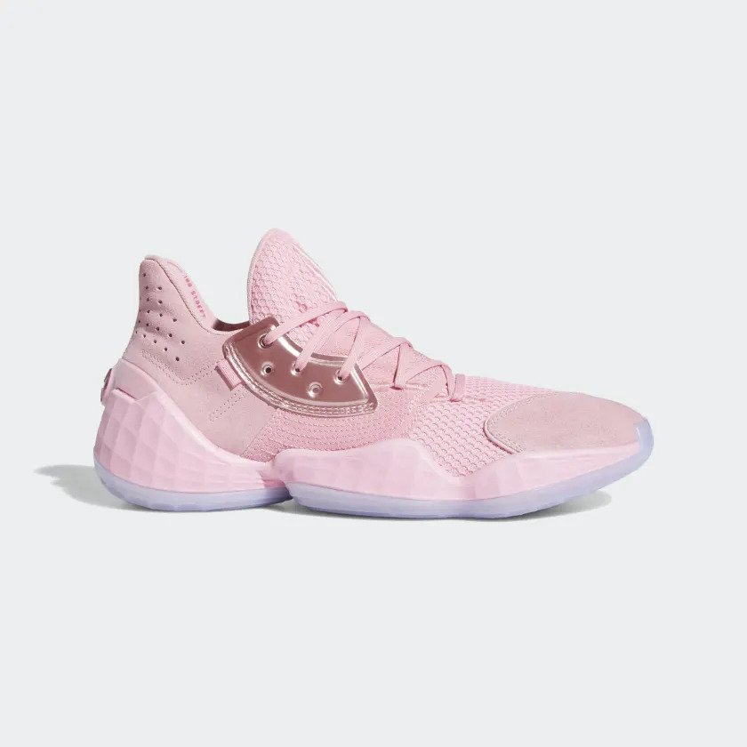
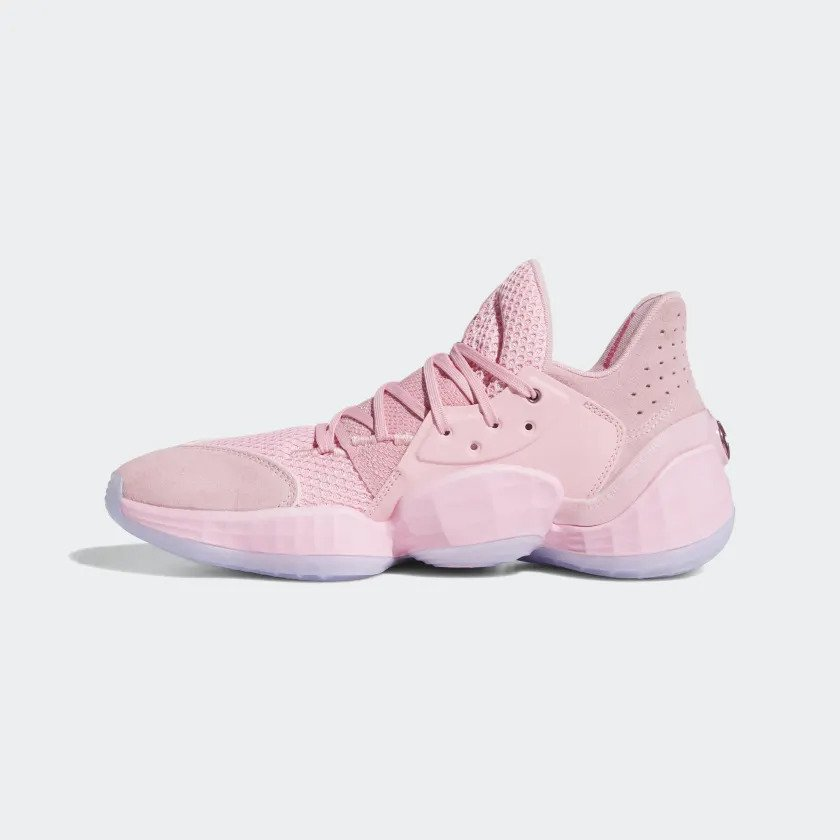
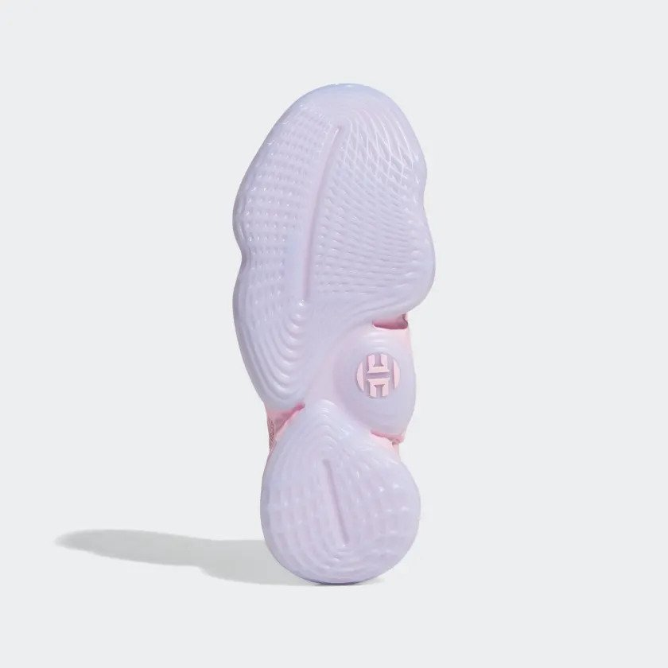

Background Information
The Harden Vol. 4, signature shoes for James Harden, were released on October 12, 2019, and the price came out to be $130.
Inspired by James Harden, these shoes feature ultra-lightweight and responsive midsole cushioning, and a midfoot band for added lockdown and stability.
On top of that, a rubber outsole made for Harden’s signature movements to provide amazing traction and grip.
Specifications for shoes are as follows:
- -Regular Fit
- -Unique Lacing System
- -Textile Upper and Midfoot Band for Lockdown and Stability
- -Textile Lining
- -Super Light Lightstrike
- -Stable, Locked-Down Feel
- -Banking Barrier for Lateral Stability
Where to Buy:
Harden Vol.4
Traction: 8/10
Overall, the traction wasn’t too bad in these shoes. The lateral movement was pretty good since you were able to get a bite however when it came to forward movement, the shoe seemed to slide a bit. Overall, the traction wasn’t too bad in these shoes. The lateral movement was pretty good since you were able to get a bite however when it came to forward movement, the shoe seemed to slide a bit.
On a clean court, the shoe performed very well regarding traction, however, on a dusty court, it seemed to pick up dust fast.
The good side to this is that it didn’t take much to get rid of the dust as it was just a couple of swipes, and you were all good again.
Cushion Setup: 8/10
In the Harden Vol.4, they went with a completely light strike cushion, and it felt amazing considering how thin they run.
In the forefront of the shoe, you are given some cushion in that area which is amazing because it gives you that extra bounce that you need.
Then in the heel area, it compresses very well on the sides, however, the rubber on the back makes the heel not compress as much as it could.
Material: 9/10
For the material, they used this fly knit, which was super soft, and extremely durable. It also was easy to break into as the fly knit kind of form to the shape of your feet.
The thickness of the shoe is perfect in my opinion, where it’s not too thick and also not too thin.
Fit: 8/10
When I first tried on the shoe, it was tight, however, the shoe was easy to break into since it was a fly knit. I would go true to size as the shoe fits me well after breaking it in.
The only problem the shoe causes me in regards to fit is that the toe box was a little small.
Lockdown: 8/10
Overall, the lockdown of the shoe was amazing. There was no heel slippage while wearing the shoe.
The lateral containment was great with the foam coming up on the side and the cage helping tremendously.
The wide base was also a great feature on the shoe. It just felt like my feet were snug in the shoe, and I wouldn’t roll over.
Overall Rating: 8/10
Overall, I thought the Harden Vol.4 was a great performer. They used great material that easily formed into your foot that also was able to keep shape when moving laterally quickly.
The cushion setup was amazing with comfortable the light strike was and how low to the ground it was giving me a good court feel.
The only that I would like to be changed is the sliding in the forward movement for traction.





Images: Shoe Images by Adidas at https://www.adidas.com.ph/harden-vol.-4-shoes/F97188.html, CC BY-NC-ND.